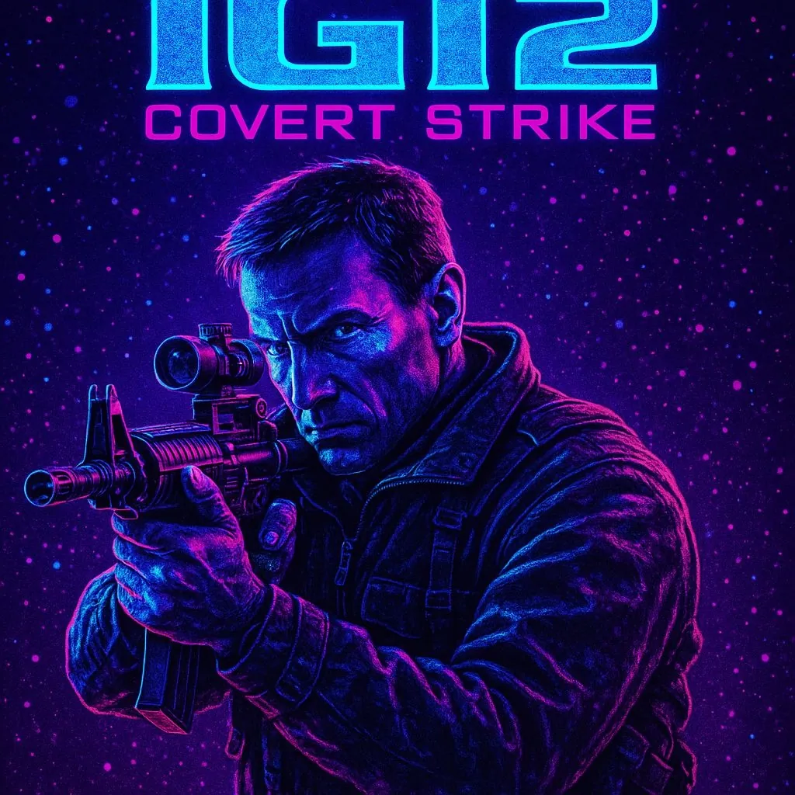
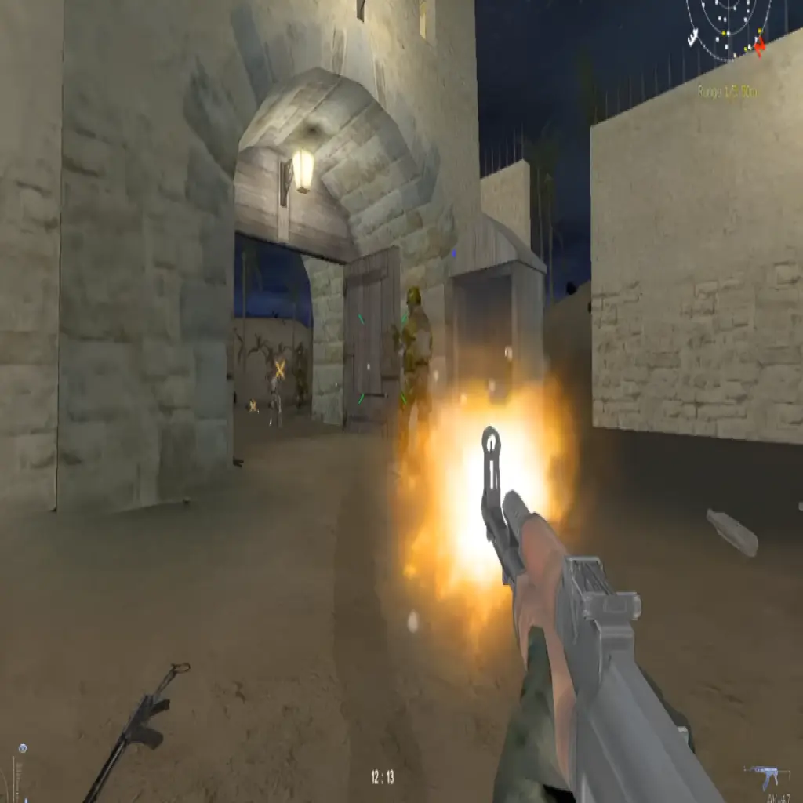
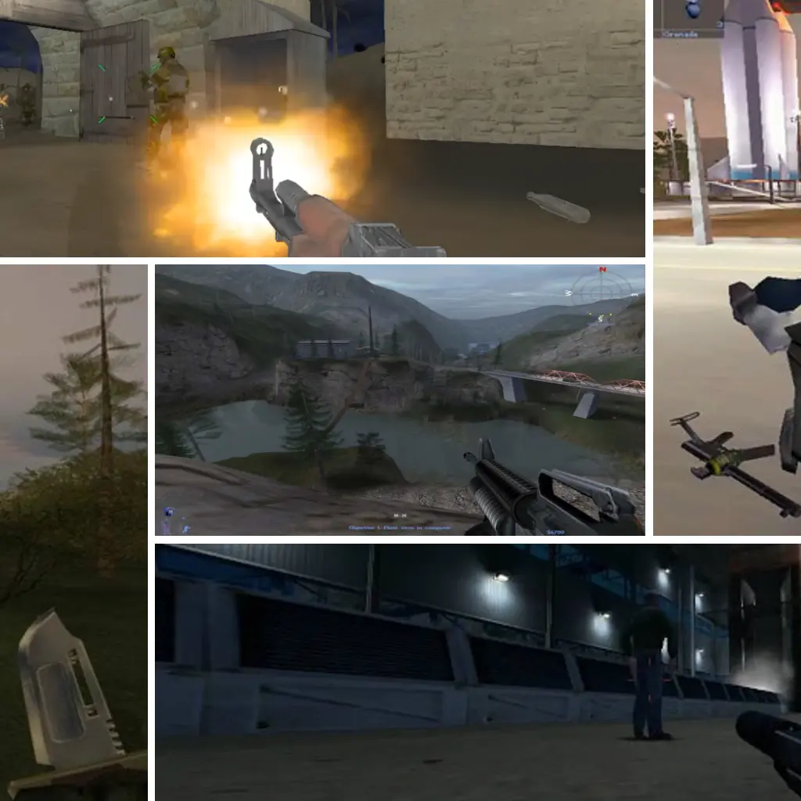

Where IGI2 fans, modders, and competitive gamers unite.
Explore IGI2-Covert StrikeStep into the world of covert operations with IGI2 – Covert Strike. Experience tactical missions, stealth gameplay, and competitive multiplayer action.

Plan and execute high-stakes infiltration missions with precision and strategy. Avoid detection, disable security, and complete objectives efficiently.

Join the community in competitive multiplayer battles. Master tactics, communication, and coordination to dominate your opponents.

Explore custom maps, community mods, and hidden secrets. Enhance your experience and challenge yourself with new environments and scenarios.
This game is a first-person tactical shooter PC game developed by Innerloop Studios and published by Codemasters in 2003. It features both Single Player and Multiplayer modes.
Follow these steps carefully to Download and install and play IGI-2 Covert Strike on your PC:
Download IGI-2 Covert StrikeProject I.G.I-2: Covert Strike is a legendary tactical shooter that blends stealth, strategy, and action. Developed by Innerloop Studios and published by Codemasters, the game continues to attract players even decades after its release thanks to its gripping missions, realistic graphics, and cooperative multiplayer mode. Players take the role of David Jones, a secret agent who must complete covert operations across different countries — using stealth, hacking, and precision shooting to achieve objectives without being detected.
The Homecoming Gaming community keeps the spirit of IGI-2 alive by offering a complete multiplayer experience with modern tools like HcLauncheR, HcCommanDeR, and HcBan. These tools help players manage servers, play online securely, and connect with thousands of global players. Our project brings new life to this classic FPS with custom maps, visual enhancements, and gameplay patches for smoother performance on Windows 10 and 11.
Whether you’re reliving nostalgic single-player missions or joining intense IGI-2 Multiplayer matches, the Homecoming Project ensures that you experience the best version of this game. We provide regular updates, community events, and secure downloads to help you enjoy IGI-2 without compatibility issues. Our servers are optimized for low latency, making it easy to connect and play from anywhere in the world.
Join our growing community today on Discord or Facebook, share your gameplay clips, and participate in events hosted by the Homecoming Gaming team. From competitive tournaments to mission walkthroughs, our platform brings together both veterans and new players. Download, install, and experience the thrill of Project IGI-2: Covert Strike once again — enhanced, optimized, and supported by fans who truly love the game.